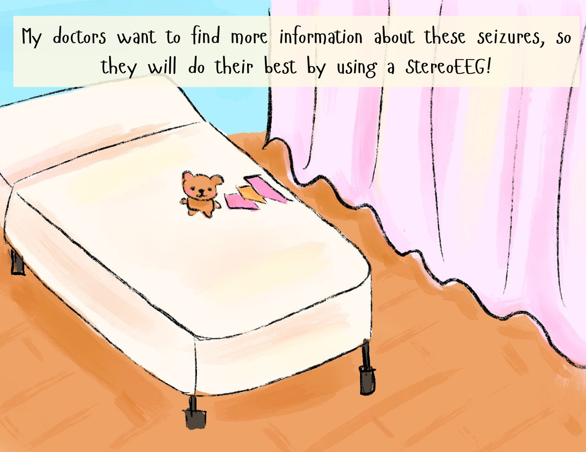
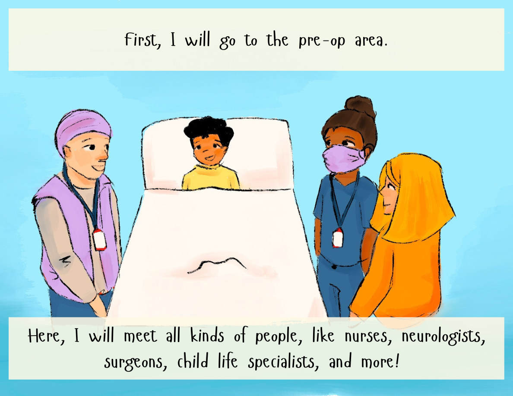
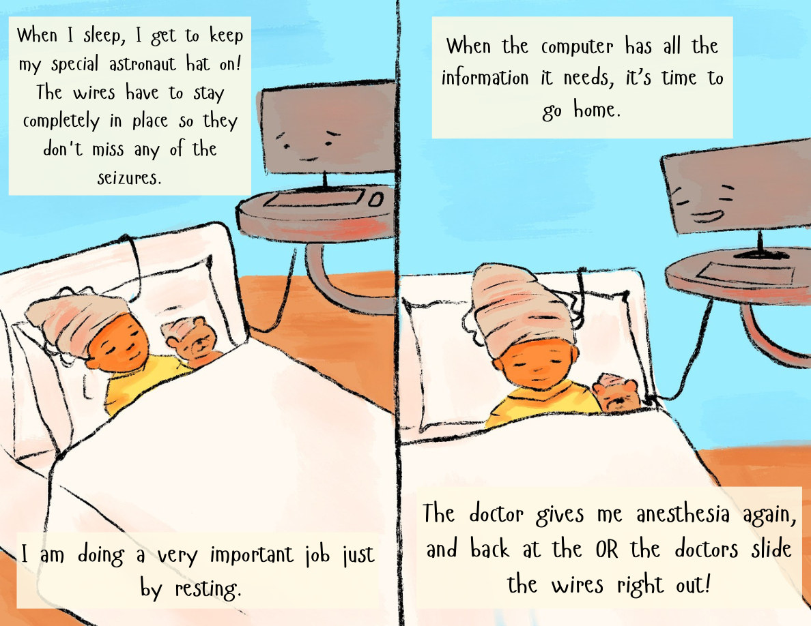
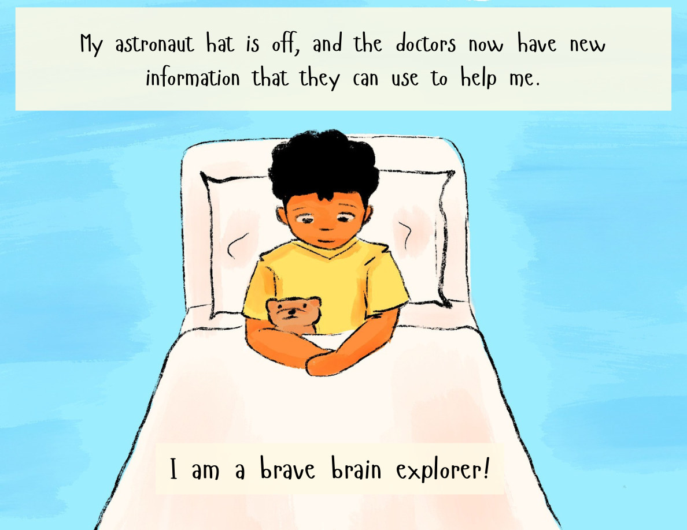

Welcome to Children's National
Illustrated teaching stories, made with clinicians for the children and families they care for.
See StereoEEGTeaching story, made with Children's National
A child-friendly visual story that helps young patients understand what happens before, during, and after a stereoEEG procedure.




Welcome to Children's National
The procedure, briefly
A stereoEEG helps doctors learn where seizures begin. While a child is asleep under anesthesia, the surgical team places thin wires in carefully chosen areas of the brain. The wires stay connected to a computer during a hospital stay so the care team can record seizure activity and use that information to plan the next step in care.